Notes
These notes are the result of the interplay between my background in mathematics and my development as a theoretical biologist. I have placed them here primarily for my own reference. As I continue to learn and explore I will update these notes with my findings.
Fitness
I denote the fitness of an individual by \(\mathcal{W}\), a Poisson distributed random variable. Why Poisson? Firstly, the fitness of an individual is the number of offspring it leaves, which is a non-negative integer. This coincides precisely with the support of the Poisson distribution. Secondly, the Poisson distribution has the property of maximizing entropy for all distributions that share its support under the constraint of having some specified mean. This is another of way stating that, aside from the first statistical moment, the Poisson distribution assumes the least information about the random variable it is modelling. If more information is known, a more precise distribution can be invoked. However, this would also make the resulting model less general.
We denote expectation by \(\mathbb{E}\) and \(W\equiv\mathbb{E}\mathcal{W}\) so that \(W\) represents the mean fitness of an individual (\(\equiv\) is used for definitions). This individual mean fitness may depend on its genotype (\(\gamma\)) or, more mechanistically, its phenotype (\(z\)). In general genotypes will be modelled as elements of some discrete space, usually finite, and phenotypes will usually be modelled as elements of the real line \(\mathbb{R}\), although at times we will restrict the range of phenotypes to be a countable or even finite subset of \(\mathbb{R}\). In the case of a random phenotype \(Z\) we write \(W(z)\equiv\mathbb{E}(\mathcal{W}(Z)|Z=z)\), that is \(W(z)\) is a conditional mean, conditioned on the phenotype \(Z\) taking a particular value \(z\). In the case of a continuously distributed trait, we will use \(\phi(z)\) for the density function of the populations phenotypic distribution. Then the total expectation of fitness, or, population mean fitness is
\[\overline W={\mathbb{E}}{\mathcal{W}}(Z)=\int W(z)\phi(z)dz.\]
For discrete traits that take the values \(z_1,z_2,\dots\), we write \(\phi_i\) and \(W_i\) for the frequency and mean fitness of trait \(z_i\) in the population. Population mean fitness is then calculated as \(\overline W=\sum_iW_i\phi_i\).
Population Dynamics
Let’s suppose there are \(N_t\) different individuals in the population at time \(t\), with each individual \(i\) having fitness \(\mathcal{W_{t+1}}(i)\). If we further suppose that generations are non-overlapping, then we obtain the population size in the next generation as \(N_{t+1}=\sum_{i=1}^{N_t}\mathcal{W_{t+1}}(i)\). If each \(\mathcal{W_{t+1}}(i)\) is a Poisson random variable with mean \(W_{t+1}(i)\) (in symbols \(\mathcal{W_{t+1}}(i)\sim\mathcal{P}(W_{t+1}(i))\)), then by the additive property of Poisson random variables we have \(N_{t+1}\sim\mathcal{P}\left(\sum_{i=1}^{N_t}W_{t+1}(i)\right)\). If selection is absent so that each \(\mathcal{W_{t+1}}(i)\) is identically distributed with mean \(W_{t+1}\), then \(N_{t+1}\sim\mathcal{P}(W_{t+1}N_t)\).
Let’s now suppose we know the value of \(N_0\) exactly and that \(W_t=W\) for each \(t\). Then \(N_1\sim\mathcal{P}(WN_0)\) and \(N_2\sim\mathcal{P}(WN_1)=\mathcal{P}(W^2N_0)\), right? We need to be careful here as \(N_1\) is a random variable making \(N_2\) a random variable with a compound distribution, that is, a parameter controlling the distribution is itself a random variable. We can use the laws of total expectation and variance to find out if \(N_1\) is Poisson. If it is, then the expectation and variance will be equivalent. Otherwise it is not a Poisson random variable.
\[{\mathbb{E}}(N_2)={\mathbb{E}}({\mathcal{W}}){\mathbb{E}}(N_1)=W^2N_0\]
\[\mathrm{Var}(N_2)=(\mathrm{Var}(\mathcal{W})+\mathbb{E}(\mathcal{W})^2)\mathbb{E}(N_1)=(1+W)W^2N_0\neq\mathbb{E}(N_2)\]
For now, let’s settle for deterministic dynamics. We’ll return to the stochastics after we get a feel for the simplier situation.
Continuous Time
If we assume that selection is absent and mean fitness is constant with respect to time, we can derive continuous time mean dynamics of \(N_t\). To do so, suppose that for \(0<\delta<1\), \(\mathbb{E}N_{t+\delta}=W^\delta\mathbb{E} N_t\). Then \(\mathbb{E}N_{t+0}=\mathbb{E}N_t\) and \(\mathbb{E}N_{t+1}=W\mathbb{E}N_t\). Hence
\[\mathbb{E}\frac{dN_t}{dt}=\frac{d}{dt}\mathbb{E}N_t=\lim_{\delta\rightarrow0}\frac{\mathbb{E}N_{t+\delta}-\mathbb{E}N_t}{\delta}\]
\[=\lim_{\delta\rightarrow0}\frac{(W^\delta-1)}{\delta}\mathbb{E}N_t=\ln(W)\mathbb{E}N_t.\]
Note that switching the derivative and the expectation must be formally justified. In what follows, we won’t drag the annoying expectation symbol along with us. Instead we will adopt the convention that \(N_t\) is actually an expected value.
In typical notation one would write \(r\) in place of \(\ln(W)\). This exposes an interesting connection between two very distinct notions of fitness. The notion of fitness that I’ve been working with, \(W\), is called the Wrightian, or, multiplicative fitness. It is a non-negative number that corresponds to the expected number of offspring produced for some category. It’s been called multiplicative fitness because the multiplication of any two Wrightian fitnesses is yet another Wrightian fitness. The natural log of this value is known as the Malthusian, or, additive fitness. Its value can be positive or negative and corresponds to the expected per capita rate at which abundance fluctuates instantaneously. Note that the log of a product is the sum of the logs. It’s this basic log rule that provides the Malthusian fitness its additivity. The sum of any two Malthusian fitnesses is again a Malthusian fitness. Artem Kaznatcheev has a nice discussion of this topic here. To solidify the connection between these two notions of fitness, consider a population that maintains a constant size of 100 but becomes extinct at a single instant (as shown below). This corresponds to each individual at first having a fitness of 1 (remember we’re assuming fitness is constant throughout the population) making the Malthusian fitness of the population zero (hence, constant population size). Then when the population drops each individual must suddenly have a Wrightian fitness of zero. The Malthusian fitness of the population will then be \(\ln(0)\) which is \(-\infty\), corresponding to the discontinuous drop in the population size.

However, this result is a bit of an abuse of the above derivation as we had made the assumption that fitness is constant with respect to time. If we assume that \(\frac{dN_t}{dt}=\ln(W_t)N_t\), where now \(W_t\) is allowed to change with respect to time, then for consistency it would be good to reconcile this equation with the above assumption that \(N_{t+1}-N_t=(W_{t+1}-1)N_t\). Doing so restricts the nature of \(W_t\). Specifically,
\[1) \ \frac{d}{dt}(N_{t+1}-N_t)=\frac{d}{dt}(W_{t+1}-1)N_t=\frac{dW_{t+1}}{dt}N_t+(W_{t+1}-1)\frac{dN_t}{dt}\] \[={\left( \frac{dW_{t+1}}{dt}+(W_{t+1}-1)\ln W_t \right)}N_t\]
\[2) \ \frac{d}{dt}(N_{t+1}-N_t)=N_{t+1}\ln W_{t+1}-N_t\ln W_t=(W_{t+1}\ln W_{t+1}-\ln W_t)N_t.\]
Dividing eqns 1) and 2) by \(N_t\), then subtracting \(W_{t+1}\ln W_t-\ln W_t\) from both returns
\[\frac{dW_{t+1}}{dt}=W_{t+1}\ln W_{t+1}-\ln W_t-W_{t+1}\ln W_t+\ln W_t.\]
Shifting the time index and simplifying provides
\[\frac{d\ln W_t}{dt}=\ln W_t - \ln W_{t-1}.\]
This states that if \(W_t=0\) for some \(t\), then \(W_s=0\) for \(s>t\). That is to say, if the population goes extinct, it remains extinct. This makes perfect sense in the absence of immigration, but there’s another implication in this equation and to explore it I will assume that the general form of \(W_t\) is \(W_t=e^{r_t}\) for some function \(r_t\). Note that this implies \(\frac{dN_t}{dt}=r_tN_t\). Then the previously derived equation is equivalent to \(\frac{dr_t}{dt}=r_t-r_{t-1}\). In the case that \(r_t=k+r_{t-1}\) for some constant \(k\), we get \(r_t=kt+c\), making \(\frac{dN_t}{dt}=(kt+c)N_t\). But we can also make \(k_t\) a function \(t\). Here we get
\[\frac{dN_t}{dt}=\left(\int_0^tk_sds+c\right)N_t\]
This might be handy if, say, you wanted to incorporate the effects of population dynamics of another species that interacts with this one. In that case \(k_t\) would likely be a function of the other species’ population size at time \(t\). But there are other possibilities. For example, we can set \(r_t=k_tr_{t-1}\) to get
\[\frac{dN_t}{dt}=\left(e^{\int_0^tk_sds-t}+c\right)N_t.\]
Regardless of what is chosen for \(r_t\), this trick will be assured to work when \(r_t\) is a linear function of \(r_{t-1}\). That is, \(r_t=a_t+b_tr_{t-1}\). In this general case we get
\[\frac{dN_t}{dt}=\left(\int_0^ta_sds+e^{\int_0^tb_sds-t}+c\right)N_t.\]
We can then solve for the mean population size as a function of time to get
\[N_t=N_0e^{\int_0^tr(s)ds}.\]
Returning to Stochastics
Picking up where we left off, the variance has now been decoupled from the expectation forcing future generation population size distributions to be non-Poisson. This can be delt with if we choose the next best option\(\dots\) the negative binomial \(\mathrm{NB}(\nu,p)\). By setting \(\nu=WN_0\) and \(p=1-\frac{1}{1+W}\) this provides the expectation and variance derived above, but is \(\mathrm{NB}\) the actual distribution of \(N_2\)? Regardless, we can continue this program to derive distributions for future population sizes. Solutions for the expectation and variance of population sizes with fixed mean fitness are
\[{\mathbb{E}}(N_t)=W^tN_0 \text{ and } {\mathrm{Var}}(N_t)={\left( \sum_{i=0}^{t-1}W^i \right)}W^tN_0=\frac{1-W^t}{1-W}W^tN_0.\]
Our negative binomial for each time \(t\) can be accordingly parameterized by \(\nu_t=\frac{1-W}{W-W^t}W^tN_0\) and \(p_t=\frac{W-W^t}{1-W^t}\).
HYPOTHESIS: For \(W_t\neq W\), define \(W_0\equiv1\) and \(W_s=0\) for \(s<0\). Using the convention \(\prod_{i=1}^0W_i=1\) and \(\sum_{i=0}^{-1}W_i=0\), I think the following is true:
\[{\mathbb{E}}(N_t)={\left( \prod_{i=1}^tW_i \right)}N_0 \text{ and } {\mathrm{Var}}(N_t)={\left( \sum_{i=0}^{t-1}\prod_{j=1}^iW_j \right)}{\left( \prod_{i=1}^tW_i \right)}N_0\]
Finally
\[{\mathbb{E}}(N_t)={\left( \bigwedge_0^tW_s^{ds} \right)}N_0 \text{ and }{\mathrm{Var}}(N_t)={\left( \int_0^t\bigwedge_0^sW_u^{du}ds \right)}{\mathbb{E}}(N_t)\]
where \(\bigwedge\) represents type-1 product integration and is defined by
\[\bigwedge_0^tW_s^{ds}\equiv e^{\int_0^t\ln W_sds}.\]
Hence, this returns the same expected dynamics as above when \(\ln W_t=r_t\).
Let’s now find the dynamics of the variance of population size across time using the same approach that we took to obtain the dynamics of the mean. Using our solution for constant fitness across time, we can obtain a derivative by making the following additional assumption
\[{\mathrm{Var}}(N_{t+\delta})={\left( \delta W^t+\sum_{i=0}^{t-1}W^i \right)}{\mathbb{E}}(N_{t+\delta}).\]
Hence
\[\frac{d}{dt}{\mathrm{Var}}(N_t)=\lim_{\delta\rightarrow0}\frac{{\mathrm{Var}}(N_{t+\delta})-{\mathrm{Var}}(N_t)}{\delta}\]
\[=\lim_{\delta\rightarrow0}\frac{{\left( \delta W^t+\sum_{i=0}^{t-1}W^i \right)}{\mathbb{E}}(N_{t+\delta})-{\left( \sum_{i=0}^{t-1}W^i \right)}{\mathbb{E}}(N_t)}{\delta}\]
\[=\lim_{\delta\rightarrow0}\frac{{\left( W^\delta{\left( \delta W^t+\sum W^i \right)}-\sum W^i \right)}{\mathbb{E}}(N_t)}{\delta}\]
\[=\lim_{\delta\rightarrow0}{\left( W^{t+\delta}+\frac{(W^\delta-1)}{\delta}\sum_i W^i \right)}{\mathbb{E}}(N_t)\]
\[={\left( W^t+\ln(W)\sum_i W^i \right)}{\mathbb{E}}(N_t)\]
For fitness that varies across time I hypothesize the following:
\[D_t{\mathrm{Var}}(N_t)={\left( \bigwedge_0^t W_s^{ds}+ \ln(W_t)\int_0^t\bigwedge_0^s W_u^{du}ds \right)}{\mathbb{E}}(N_t).\]
Differentiating the above hypothesized solution for \({\mathrm{Var}}(N_t)\) shows that these results are copacetic.
Also note this implies that at \(t=0\) the rate of increase in the variance is equal to the number of initial individuals. For instance, if there’s no individuals, the variance will be zero because we are certain there will be no offspring. Since each individual contributes uncertainty to the number of offspring the variance should increase faster with larger initial populations. However, if the fitness is less than one, the log will act to reduce the variance, most likely because extinction would happen quickly if the fitness is less than one long enough.
Populations of Types
In terms of modelling, a population can be very abstract. Its concept is not restricted to a set of living things, as in the biological concept of a population. Here a population can be a set of biological populations, a set of species, replicating molecules, franchises, languages and so on. The members of the population may not be uniform, but can consist of various different types. For example, we can consider populations of individuals categorized by their phenotype or populations of species categorized by clades. We now derive how the distribution of types within a population fluctuates due to differential fitness, ie, selection.
Consider a population of \(T\) different types, each type \(i\) with \(n_t(i)\) individuals at time \(t\). If we denote \(\phi_t(i)\) to be the proportion of individuals within type \(i\) at time \(t\) among the population, we have \(\phi_t(i)=\frac{n_t(i)}{N_t}\) where \(N_t=\sum_{i=1}^Tn_t(i)\). Denote the expected fitness of each individual within type \(i\) as \(W_t(i)\). Then committing ourselves to be content with expected dynamics and adopting the notation \(D_t\) in place of \(\frac{d}{dt}\), we have
\[D_tN_t=D_t\sum_in_t(i)=\sum_in_t(i)\ln W_t(i)=\overline{\ln W}_tN_t.\]
\[D_t\phi_t(i)=D_t\frac{n_t(i)}{N_t}=\frac{N_tD_tn_t(i)-n_t(i)D_tN_t}{N_t^2}\]
\[=\frac{n_t(i)\ln W_t(i)-n_t(i)\overline{\ln W}_t}{N_t}=\phi_t(i){\left( \ln W_t(i)-\overline{\ln W}_t \right)}.\]
Setting \(\rho_t(i)=\ln W_t(i)-\overline{\ln W}_t\) (what I refer to as the “relative” Malthusian fitness) we can solve for \(\phi_t(i)\) to get
\[\phi_t(i)=\phi_0(i)e^{\int_0^t\rho_s(i)ds}\]
Response in Mean and Variance
Let’s suppose each type is associated with a distinct value. If there’s a finite number of types, there’ll be a finite number of values. For types with a continuous index, there’ll be a continuum of possible values. Let’s stick with a continuum of types indexed by \({\mathbb{R}}\). Denote by \(\bar z_t\) the average value of the population at time \(t\) and \(\sigma_t^2\) the variance of types at time \(t\). Then
\[\bar z_t=\int_{\mathbb{R}}z\phi_t(z)dz, \ \text{and} \ \sigma_t^2=\int_{\mathbb{R}}(\bar z_t-z)^2\phi_t(z)dz.\]
Using the above results we can derive dynamics for these quantities as follows
\[\frac{d\bar z_t}{dt}=\frac{d}{dt}\int_{\mathbb{R}}z\phi_t(z)dz=\int_{\mathbb{R}}z\frac{d}{dt}\phi_t(z)dz=\int_{\mathbb{R}}z(\ln W_t(z)-\overline{\ln W}_t)\phi_t(z)dz\]
\[=\overline{z\ln W_t(z)}-\bar z\overline{\ln W}_t={\mathrm{Cov}}(z,\ln W_t)\]
\[\frac{d\sigma_t^2}{dt}=\frac{d}{dt}\int_{\mathbb{R}}(\bar z_t-z)^2\phi_t(z)dz=\int_{\mathbb{R}}2(\bar z_t-z)\phi_t(z)\frac{d\bar z_t}{dt}+(\bar z_t-z)^2\frac{d\phi_t(z)}{dt}dz\]
\[=\int_{\mathbb{R}}(\bar z_t-z)^2(\ln W_t(z)-\overline{\ln W}_t)\phi_t(i)dz=\overline{(\bar z_t-z)^2\ln W_t(z)}-\overline{(\bar z_t-z)^2}\overline{\ln W}_t\]
\[={\mathrm{Cov}}((\bar z_t-z)^2,\ln W_t)\]
Doing this for discrete time returns
\[\Delta\bar z_t={\mathrm{Cov}}(z,W_t), \ \Delta\sigma_t^2={\mathrm{Cov}}((\bar z_t-z)^2,W_t)\]
Reproduction
So far I have assumed that inheritance is perfect so that offspring resemble their parents exactly. The existence of sex in the above theory is ambiguous. One could hold the perspective that individuals reproduce asexually or that individuals only mate with only other individuals of their exact type, creating \(2\mathcal{W}\) offspring, one set for each member of the mating pair. Yet another way to look at this theory is that it tracks just one gender so that, for example, daughters resemble their mothers perfectly and their fathers make no contribution to their type. Here I will explicitly model sexual reproduction by beginning with random mating. I will first focus on discrete time dynamics for a continuum of types indexed by \({\mathbb{R}}\). Later I will extend these results to continuous time dynamics and a more general mating pattern that encompasses everything from absolutely assortative mating to random mating to absolutely disassortative mating.
Pure Random Mating
Consider a population of \(N\) hermaphroditic individuals with traits \(\{z_1,\dots,z_N\}\). The trait of an offspring \(z_o\) will be its midparent. Because the population is finite, there is a finite number \(k\) of possible midparents. Denote this set of midparents by \(M=\{m_1,\dots,m_k\}\). Each midparent has a particular probability of occuring which is the probability of choosing two parents whose average is equal to that midparent. Denote \(w_i\) for the probability of midparent \(m_i\). Assuming perfect heritability, the offspring trait distribution will have \(w_i\) as its distribution.
Our goal is calculate a formula for \(w_i\). Let \(P_i\) be the set of all parental phenotypes whose average with some parental phenotype (possibly itself) is \(m_i\). If we think of \(m_i\) as the result of drawing two random parents (with replacement) then the \(m_i\) will be distributed as a multinomial with \(N\) categories and 2 trials. Writing \(\phi_p(z)\) as the frequency of trait \(z\) in the parental distribution we have
\[w_i=2\sum_{\substack{z\in P_i}}\phi_p(z)\phi_p(2m_i-z).\]
If we knew the exact set of parental phenotypes, this would not be difficult to calculate. But if we want to continue iterating this process, this calculation becomes very non-trivial. To simplify this, I will blur the exactness of each parents’ phenotype. Instead of pretending that we know the exact value of each phenotype, I’ll assume each parental phenotype is a random variable independent of one another and identically distributed throughout the population. With this uncertainty, the set of possible midparents becomes uncountably infinite and their distribution will become continuous instead of discrete. We will adjust our notation to reflect this so that \(w(m)\) is the probability density for the offspring trait \(m\) (which in this case is equivalent to the midparents, hence the \(m\)) whose domain is now all of \({\mathbb{R}}\). The above summation becomes the integral
\[w(m)=2\int_{\mathbb{R}}\phi_p(z)\phi_p(2m-z)dz.\]
Assuming the parental population is distributed normally with mean \(\mu\) and variance \(\sigma^2\), we have
\[w(m)=2\int_{\mathbb{R}}\frac{1}{\sqrt{2\pi\sigma^2}}\exp{\left( -\frac{(\mu-x)^2}{2\sigma^2} \right)} \frac{1}{\sqrt{2\pi\sigma^2}}\exp{\left( -\frac{(\mu-(2m-x))^2}{2\sigma^2} \right)} dx\]
\[=2\int_{\mathbb{R}}\frac{1}{\sqrt{2\pi\sigma^2}}\exp{\left( -\frac{(\mu-x)^2}{2\sigma^2} \right)} \frac{1}{\sqrt{2\pi\sigma^2}}\exp{\left( -\frac{((2m-\mu)-x)^2}{2\sigma^2} \right)} dx\]
\[=2\int_{\mathbb{R}}\frac{1}{\sqrt{4\pi\sigma^2}}\exp{\left( -\frac{(2\mu-2m)^2}{4\sigma^2} \right)} \frac{1}{\sqrt{2\pi\sigma^2}}\exp{\left( -\frac{(m-x)^2}{2\sigma^2} \right)} dx\]
\[=\frac{1}{\sqrt{\pi\sigma^2}}\exp{\left( -\frac{(\mu-m)^2}{\sigma^2} \right)}.\]
Hence, with just random mating \(\Delta\mu=0\) and \(\Delta\sigma^2=-\frac{\sigma^2}{2}\). For a general phenotypic density, the continuous time analog is
\[\frac{\partial\phi_t}{\partial t}=\phi_t(\ln\phi_t-\overline{\ln\phi_t}).\]
When \(\phi_t\) is normal, we get
\[\frac{\partial}{\partial t}\phi_t(z)=\phi_t(z){\left( -\frac{(\bar z_t-z)^2}{2\sigma^2}+\frac{1}{2} \right)}.\]
Assortative and Disassortative Mating
The key here is to define assortative mating as a positive correlation between the types of mating pairs. We might jump to disassortative mating as a negative correlation between the types of mating pairs but this is not quite right. If mating pairs are negatively correlated, then when the phenotype of one member of the pair tends to be large, the phenotype of the other member tends to be small. So this is a restricted notion of disassortative mating. I’ll attempt to work out a more general picture of disassortative mating in the next section. For now, instead of referring to the situation of negative correlation disassortative mating, I’ll refer to it as negative mating.
I’ll use \(\rho\) to denote the correlation between types of mating pairs. We will see that when \(\rho=1\) we return to the situation that I have been referring to as absolutely assortative mating which is basically clonal reproduction.
Other Mating Patterns
Mating Pattern as Phenotype
Dioecy
Particulate Inheritance
A little excerpt from Warren J. Ewens:
“It is the the ‘quantal’ nature of the gene that leads to the stability behavior described by the Hardy-Weinberg law. It is thus interesting that the year in which the Mendelia theory was rediscovered, 1900, was the same year as the introduction of the quantum theory in physics. Both theories have been fundamental and crucial in their respective spheres. One can even claim that if there is intelligent life, that is, life that has evolved via natural selection, elsewhere in the universe, the hereditary mechanism involve must be a quantal, maybe a Mendelian, one, since otherwise it is not clear how the variation necessary for evolution by natural selection can be maintained.”
So far I have been using a model of blending inheritance to calculate the phenotype of the offspring. This model of inheritance has been argued against from it’s inception going back to the days of Darwin. Yet it remains at the core of the modern evolutionary theory of continuous traits, quantitative genetics. The main issue with this model is that, under pure random mating, the variance of a phenotype in a population is halved each generation, causing rapid degradation in diversity. One can combat this decay by incorporating mutation, as done below. However, this requires a rate of mutation that is far too rapid than what has been observed empirically. This problem is said to have been solved independtly by G.H. Hardy and Wilhelm Weinberg in 1908. In their particulate theory of inheritance diversity is maintained in a randomly mating population. It seems to me that most phenotypes can be described with a continuum and are more explicitly the target of natural selection as opposed to the genotype. On the other hand, since sexual reproduction inevitably involves the combination of gametes, it seems that the genotype generally has more power in this realm over the phenotype. Here I’ll begin my naive attempt to combine these two insights. This is a first pass, writing down my thoughts as they form, so you may wish to look away until this section has reached maturity.
My efforts here will focus on diploids. Let \({\mathbb{Z}}^2\) be the index set for all possible genotypes and \({\mathbb{R}}\) for all possible phenotypes. Each individual \(i\) is represented by a genotype-phenotype pair \((\gamma_i,z_i)\in{\mathbb{Z}}^2\times{\mathbb{R}}\). Note that \(\gamma_i\) itself has two unordered components, which I denote by \(\gamma_i^1\) and \(\gamma_i^2\) and define \(\dot\gamma_i\equiv\frac{\gamma_i^1+\gamma_i^2}{2}\). This allows us to capture genotype of a diploid with a single number that can then be related to the phenotype. I assume a linear genotype phenotype map such that \(z_i\sim\mathcal{N}(\alpha\dot\gamma_i+\beta,\eta^2)\) for some fixed \(\alpha,\beta\in{\mathbb{R}}\). Since it is certainly possible that the relationship between the phenotype and genotype can change depending on the environment (plasticity) and even evolve with time (so that \(\alpha\) and \(\beta\) are themselves phenotypes that may or may not be predicted by genotypes) this assumption would need to be relaxed for a more satisfying theory. But let’s keep things simple for now.
Denote by \((\Gamma,Z)\) a random genotype-phenotype pair distributed across the population so that \(\omega\) represents the individual and \(\Omega\) is the set of all individuals \((N=|\Omega|)\). If \(\Gamma\) significantly correlates with \(Z\), I’ll say that \(Z\) is a heritable trait. For the mating pair of individuals \(i\) and \(j\) I’ll denote their offspring genotype by \(\gamma_{ij}\), which will be uniformly distributed over the four possible pairs \((\gamma_i^1,\gamma_j^1)\), \((\gamma_i^1,\gamma_j^2)\), \((\gamma_i^2,\gamma_j^1)\) and \((\gamma_i^2,\gamma_j^2)\).
Now that the basic rulese have been set in place, let’s play a little game. Let’s pretend that we’re alien scientists and on our world the genotypes of living things translate directly to elements of \({\mathbb{Z}}^2\). Suppose for some reason we know \(\alpha\) and \(\beta\) precisely and that genotypes tend to be easier to observe than phenotypes. Say we go out and sample a population and estimate the distribution of \(\Gamma\). From this knowledge we can predict the distribution of \(Z\).
\[{\mathbb{E}}(Z)=\frac{1}{N}\sum_i(\alpha\dot\gamma_i+\beta)=\frac{\alpha}{2N}\sum_{ij}\gamma_i^j+\beta\]
\[p(x,y)=p(y,x)=\frac{\text{number of individuals with genotype} \ (x,y)}{N}\]
\[p(x,\cdot)=\frac{\text{ number of individuals with at least one } x \text{ haplotype }}{N}\]
\[p(x,\neg y)=\frac{\text{ number of individuals with } x \text{ as one haplotype and anything other than }y\text{ as the other }}{N}\]
\[p'(x,x)=p(x,x)^2+\frac{1}{2}p(x,\neg x)p(x,x)+\frac{1}{4}p(x,\neg x)^2={\left( p(x,x)+\frac{1}{2}p(x,\neg x) \right)}^2\]
Can write equilibrium for each genotype, I think. Then we can write equilibrium for each phenotype.
\[p_\infty(x,x)={\left( p_0(x,x)+\frac{1}{2}p_0(x,\neg x) \right)}^2\] \[p_\infty(x,\neg x)=2{\left( p_0(x,x)+\frac{1}{2}p_0(x,\neg x) \right)}{\left( p_0(\neg x,\neg x)+\frac{1}{2}p_0(x,\neg x) \right)}\] \[p_\infty(\neg x,\neg x)={\left( p_0(\neg x,\neg x)+\frac{1}{2}p_0(x,\neg x) \right)}^2\]
If the interest is speciation I know we need at the very least some isolating mechanism, whether temporal, spatial, behavioural, or physical. For example, in sympatry (both time and space), hybrid depression is not enough, the population must evolve behaviour that avoids hybridization or else the population will probably just crash.
Can further assume that the probability that gametes \(x\) and \(y\) produce a viable offspring depends on \(|x-y|\).
Mutation
From my perspective, mutation is a force that causes imperfect replication. That is, the offspring of an individual may not resemble their parent perfectly and this difference is called mutation. This fits the general sense of the word which is alteration, change, or to vary. However, in biology the word mutation refers to a very specific process involving the permament substitution of nucleotide base-pairs. Since I operate at a more abstract level, I will abuse this custom and use the word mutation as described above, referring to imperfect replication. My goal is not to reproduce the minutiae of molecular detail, but to capture the process of imperfect heritability in a tractable way. I believe this will lead me to a leaner, more general theory.
Finally, before we dive in, I just would like to remind myself that the following is not restricted to common phenotypes such as genotype, height, toxicity, etc, but also to location. We can think of the different types as either discrete locations or a continuum of geographical space. In this case mutation is nothing more that dispersion.
Returning to a population of \(T\) types, let’s now suppose that there is a probability \(P_{ij}\) that an individual of type \(i\) produces an offspring of type \(j\). Then, if \(W(i)\) is the expected fitness of an individual of type \(i\), this individual will on average produce \(W(i)P_{ij}\) individuals of type \(j\) and \(W(i)(1-\sum_{j\neq i}P_{ij})\) individuals of type \(i\). The expected dynamics for each type is then
\[n_{t+1}(i)=\sum_{j=0}^TP_{ji}W(j)n_t(j)\]
If we write \(\mathbf{\tilde n}_t\) as a row vector denoting the sizes of each type multiplied by their fitnesses so that it’s entries are \(W_{t+1}(i)n_t(i), \ \mathbf{n}_t\) for a row vector containing just the population sizes and \(P\) for a matrix whose entries are \(P_{ij}\), we have
\[\mathbf{n}_{t+1}=\mathbf{\tilde n}_t P.\]
From here we can generate all sorts of madness by conjuring up quirky combinations of \(W\) and \(P\). My interest, however, lies in something more docile. I’m primarily interested in continuously varying traits. The above only works for at most a countable number of types. For a continuum we’ll have to do some fancy foot work which will inevitably lead us to diffusion. The idea here is that an individual of type \(z\) produces offspring that are normally distributed around this type with some variance. That variance (which I denote by \(\eta^2\)) will be our diffusion coefficient. In the end, we wind up with
\[\frac{\partial\phi_t}{\partial t}=\eta^2\frac{\partial^2\phi_t}{\partial z^2}.\]
The above discrete time dynamics of \(\sigma^2\) with random mating and mutation become \(\Delta\sigma^2=\eta^2-\frac{\sigma^2}{2}\). One way to show this is to take the same approach as above but assume the offpsring phenotypic density takes the form
\[\phi_o(z)=\sum_iw_i\frac{1}{\sqrt{2\pi\eta^2}}\exp{\left( -\frac{(m_i-z)^2}{2\eta^2} \right)}.\]
Another way would be to assume \(\phi_t\) is normal and integrate the equation \(\partial_t\phi_t=\eta^2\partial_{zz}\phi_t+\phi(\ln\phi_t-\overline{\ln\phi_t})\) over a single unit of time. I leave the details to the motivated reader.
Population Dynamics
We need to return to considering the effects of mating on the population dynamics.
Putting it all together
\[\frac{\partial\phi_t}{\partial t}=\phi(\ln W_t-\overline{\ln W}_t)+\phi(\ln \psi_t-\overline{\ln\psi_t})+\eta^2\frac{\partial^2\phi_t}{\partial z^2}\]
Examples
A Continuous Time Example
Let’s suppose we have a continuum of types indexed by \(z\). If we set \(W_t(z)=W_{max}\exp{\left( -\frac{(\theta-z)^2}{2\omega^2} \right)}\) and \(\phi_0(z)=\frac{1}{\sqrt{2\pi\sigma_0^2}}\exp{\left( -\frac{(\bar z_0-z)^2}{2\sigma_0^2} \right)}\), then
\[\frac{d\bar z_t}{dt}=\frac{\sigma_t^2}{\omega^2}(\theta-\bar z_t) \ \text{and} \ \frac{d\sigma^2_t}{dt}=-\frac{\sigma_t^4}{\omega^2}.\]
Thus
\[\sigma_t^2=\frac{\omega^2\sigma_0^2}{\omega^2+t\sigma_0^2}, \ \bar z_t=\frac{\omega^2\bar z_0+t\sigma_0^2\theta}{\omega^2+t\sigma_0^2},\]
Compare this with the quantitative genetic results below. We can then plug these solutions for the mean and variance into the expression for \(\phi_t\) to solve for the evolution of the whole distribution.
\[\phi_t(z)=\frac{1}{\sqrt{2\pi\sigma_t^2}}\exp{\left( -\frac{(\bar z_t-z)^2}{2\sigma_t^2} \right)}\]
This provides the following solution for the population size:
\[N_t=N_0W_{max}^t\sqrt{\frac{\omega^2}{t\sigma_0^2+\omega^2}}\exp{\left( -t\frac{(\theta-\bar z_0)^2}{2(t\sigma_0^2+\omega^2)} \right)}.\]
We can see that \(\sigma_t^2\) will asymptotically decrease towards zero, which is not very realistic since we know extant populations maintain some variance. To prevent this we can assume the existence of some process that increases variance at the rate \(\eta^2\) so that \(D_t\sigma_t^2=\eta^2-\sigma_t^4/\omega^2\). Our results change and become
\[\bar z_t=\theta+C_2\mathrm{sech}{\left( \frac{\eta}{\omega}t+C_1 \right)}, \ \sigma_t^2=\eta \ \omega \ \mathrm{tanh}{\left( \frac{\eta}{\omega}t+C_1 \right)}\]
where \(C_1=\mathrm{atanh}{\left( \frac{\sigma_0^2}{\eta \ \omega} \right)}\) and \(C_2=\sqrt{\frac{\eta^2\omega^2}{\eta^2\omega^2-\sigma_0^4}}(\bar z_0-\theta)\). Note that \(\mathrm{sech}(\mathrm{atanh}(x))=\sqrt{1-x^2}.\)
\[N_t=N_0e^{\int_0^t\overline{\ln W}_sds}=N_0W_{max}^t\exp{\left( \int_0^t-\frac{(\theta-\bar z_s)^2}{2\omega^2}-\frac{1}{2}\frac{\sigma_s^2}{\omega^2}ds \right)}=\dots\]
Another Example
Let’s consider a population of individuals where the individuals interact with each other, potentially competing with or aiding one another in the search for resources. As above, I’ll consider a population indexed by a phenotype \(z\in{\mathbb{R}}\) that is initially distributed normally with mean \(\bar z_0\) and variance \(\sigma_0^2\). Suppose that each individual interacts with a random number \(K\) of individuals from its population, each chosen randomly and independently. I’ll write the fitness of an individual with phenotype \(z\) that interacts with individuals with phenotypes \(z_1,\dots,z_K\) as \(W(z|z_1,\dots,z_K)\) and assume it decomposes as follows
\[W(z|z_1,\dots,z_K)=\prod_{i=1}^KW(z|z_i).\]
\[W(z|z_i)=W_{max}\exp{\left( -\frac{(z_i-z)^2}{2\omega^2} \right)}\]
\[W(z|K)=W_{max}^K{\left( \frac{\omega^2}{\omega^2+\sigma_t^2} \right)}^{K/2}\exp{\left( -K\frac{(\bar z_t-z)^2}{2(\omega^2+\sigma_t^2)} \right)}\]
\(K\sim\mathrm{Bin}(N_t,p)\)
\[W(z)=\prod_{i=0}^NW(z|K=i)^{P(K=i)}=W_{max}^{pN_t}{\left( \frac{\omega^2}{\omega^2+\sigma_t^2} \right)}^{pN_t/2}\exp{\left( -pN_t\frac{(\bar z_t-z)^2}{2(\omega^2+\sigma_t^2)} \right)}\]
\[\frac{d\bar z_t}{dt}=0, \ \frac{d\sigma_t^2}{dt}=-\frac{pN_t}{\omega^2+\sigma_t^2}\sigma_t^4\]
\[\frac{dN_t}{dt}=pN_t^2{\left( \ln W_{max}+\ln\sqrt{\frac{\omega^2}{\omega^2+\sigma_t^2}}-\frac{\sigma_t^2}{2(\omega^2+\sigma_t^2)} \right)}\]
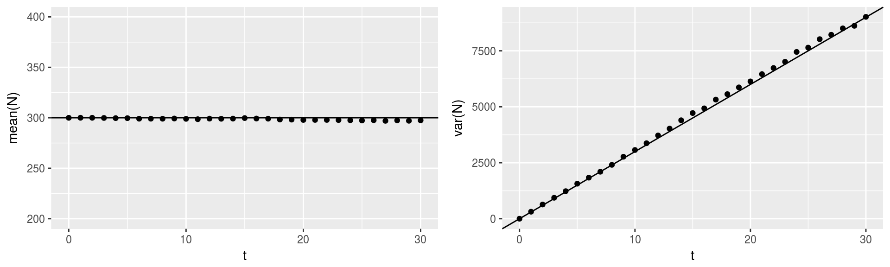
We can see that the population evolves to have less diversity but increased population size. The fitness used assumed that the more similar individuals are, the more they will benefit each others fitness. So selection for the mean of the population occurs, which then increases the mean fitness of the population. Let’s see what happens when each interaction has an equivalent effect on fitness regardless of the phenotypes involved. We might assume that at lower population densities, the individuals help each other, but at higher densities they tend to hinder each other. Let’s use \(p_1\) for the proportion of the population an individual encounters that benefits its fitness and \(p_2\) for the proportion that hinder. Then \(p=p_1+p_2\) is the total proportion of the population encountered and \(\pi_1=\frac{p_1}{p_1+p_2}\) is the fraction of this that helps and \(1-\pi_1=\pi_2=\frac{p_2}{p_1+p_2}\) is the fraction that hinders. Let’s suppose \(\pi_1=\frac{1}{N_t+1}\) making \(\pi_2=\frac{N_t}{N_t+1}\)
\[W_1>1, \ W_2<1\]
\[W(z|z_i)=W_1^{\pi_1}W_2^{\pi_2}\implies W(z|z_1,\dots,z_K)=W_1^{K\pi_1}W_2^{K\pi_2}\implies W(z)=W_1^{pN_t\pi_1}W_2^{pN_t\pi_2} =W_1^{p\frac{N_t}{N_t+1}}W_2^{p\frac{N_t^2}{N_t+1}}\]
\[\frac{dN_t}{dt}=p\frac{N_t}{N_t+1}\ln W_1+p\frac{N_t^2}{N_t+1}\ln W_2\implies N_\infty=-\frac{\ln W_1}{\ln W_2}\]
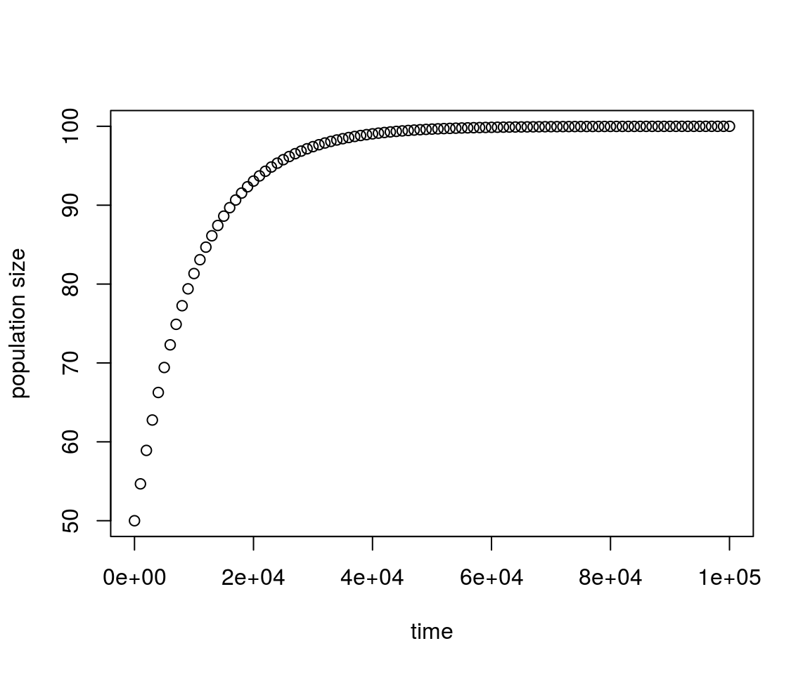
Returning to evolution, we might assume the Gaussian term used above represents the effectiveness of an individual in helping or hindering another individual based on how similar they are. In this case we get
\[W(z|z_i)=W_1^{\pi_1}W_2^{\pi_2}\exp{\left( -\frac{(z_i-z)^2}{2\omega^2} \right)}\implies W(z|z_1,\dots,z_K)=W_1^{K\pi_1}W_2^{K\pi_2}\exp{\left( -K\frac{(z_i-z)^2}{2\omega^2} \right)}\]
\[\implies W(z)=W_1^{pN_t\pi_1}W_2^{pN_t\pi_2}\exp{\left( -pN_t\frac{(\bar z_t-z)^2}{2(\omega^2+\sigma_t^2)} \right)} =W_1^{p\frac{N_t}{N_t+1}}W_2^{p\frac{N_t^2}{N_t+1}}\exp{\left( -pN_t\frac{(\bar z_t-z)^2}{2(\omega^2+\sigma_t^2)} \right)}\]
\[\frac{d\sigma_t^2}{dt}=\eta^2-\frac{pN_t}{\omega^2+\sigma_t^2}\sigma_t^4\]
\[\frac{dN_t}{dt}=p\frac{N_t}{N_t+1}\ln W_1+p\frac{N_t^2}{N_t+1}\ln W_2+pN_t^2\ln\sqrt{\frac{\omega^2}{\omega^2+\sigma_t^2}}-pN_t^2\frac{\sigma_t^2}{2(\omega^2+\sigma_t^2)}\]
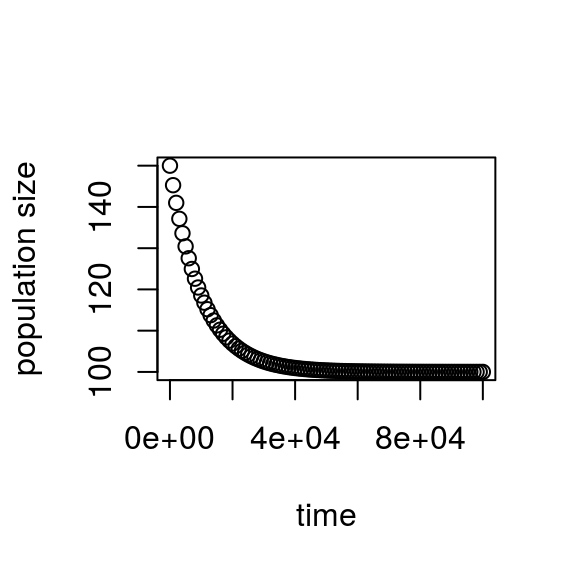
This seems promising.
Another Other Example
Expanding on the above, consider two interacting populations each indexed by \(x,y\in{\mathbb{R}}\) respectively. Let’s suppose the expected fitness of an individual depends not only on its phenotype, but also on the phenotypes of the individuals it interacts with. Each interaction builds up to overall fitness of the individual. For example, for an individual with phenotype \(x\) that interacts with \(K_1\) individuals with phenotypes \(y_1,y_2,\dots,y_{K_1}\), we can define fitness for \(x\) to be
\[W_1(x|y_1,\dots,y_{K_1})\equiv\prod_{i=1}^{K_1}W_1(x|y_i).\]
If there’s \(N_{2,t}\) individuals in species 2 at time \(t\), we can have \(K_1\sim\mathrm{Bin}(N_{2,t},p_1)\). Suppose \(W_1(x|y)=W_{1,max}\exp{\left( -\frac{(y-x)^2}{2\omega_1^2} \right)}\), then
\[W_1(x|y_1,\dots,y_{K_1})=W_{1,max}^{K_1}\exp{\left( -\sum_{i=1}^{K_1}\frac{(y_i-x)^2}{2\omega_1^2} \right)}\]
If we assume the phenotypes \(y_1,\dots,y_{K_1}\) are distributed normally and are drawn at random independently of one another, we can calculate the expected fitness for an individual from population 1 with phenotype \(x\) given that it interacts with \(K_1\) individuals as
\[W_1(x|K_1)=\int_{\mathbb{R}}\cdots\int_{\mathbb{R}}W_1(x|y_1,\dots,y_{K_1})\phi_{2,t}(y_1)\cdots\phi_{2,t}(y_{K_1})dy_1\cdots dy_{K_1}={\left( \int_{\mathbb{R}}W_1(x|y)\phi_{2,t}(y)dy \right)}^{K_1}\]
\[=W_{1,max}^{K_1}\exp{\left( -K_1\frac{(\bar y_t-x)^2}{2(\omega_1^2+\sigma_{2,t}^2)} \right)}.\]
Finally, to get the total expected fitness \(W_1(x)\), we average over all possible values of \(K_1\). However, since each component of fitness multiplies together to produce the total fitness, we shouldn’t take an arithmetic average, we should take a geometric average. Doing so provides the following result
\[W_1(x)=\prod_{i=0}^{N_{2,t}}W_1(x|K_1=i)^{P(K_1=i)}=W_{1,max}^{p_1N_{2,t}}\exp{\left( -p_1N_{2,t}\frac{(\bar y_t-x)^2}{2(\omega_1^2+\sigma_{2,t}^2)} \right)}.\]
and
\[\ln W_1(x)=\sum_{i=0}^{N_{2,t}}P(K_1=i)\ln W_1(x|K_1=i)=p_1N_{2,t}{\left( \ln W_{1,max}-\frac{(\bar y_t-x)^2}{2(\omega_1^2+\sigma_{2,t}^2)} \right)}\]
\[\dots\]
\[\frac{d\bar x_t}{dt}=\frac{p_1N_{2,t}}{\omega_1^2+\sigma_{2,t}^2}\sigma_{1,t}^2(\bar y_t-\bar x_t) \ \text{and} \ \frac{d\sigma_{1,t}^2}{dt}=-\frac{p_1N_{2,t}}{\omega_1^2+\sigma_{2,t}^2}\sigma_{1,t}^4\]
\[\frac{dN_{1,t}}{dt}=\overline{\ln W_t}N_{1,t}=p_1{\left( \ln W_{1,max}-\frac{(\bar y_t-\bar x_t)^2+\sigma_{1,t}^2}{2(\omega_1^2+\sigma_{2,t}^2)} \right)}N_{2,t}N_{1,t}\]
To solve this, we have to solve a system of six nonlinear differential equations simultaneously. Wouldn’t it be nice to just get rid of the population dynamics? If we assumed that each individual interacts with the same number of individuals from the opposing population every generation, this would be equivalent to assuming the population sizes are constant. But then we would need some combination of extinction, zero interaction, or zero selection. Any of those three possibilities defeats the purpose of this investigation, so it cannot be logically reduced to a simpler problem. However, it’s this added complexity that we were interested in to begin with, so this is not an issue. Let’s begin with a numerical exploration.
Parameters:
- \(p_1=p_2=0.01\)
- \(\ln W_{1,max}=\ln W_{2,max}=0.001\)
- \(\omega_1^2=\omega_2^2=1000\)
- \(\bar x_0=10, \ \bar y_0=-10\)
- \(\sigma_{1,0}^2=\sigma_{2,0}^2=100\)
- \(N_{1,0}=N_{2,0}=100\)
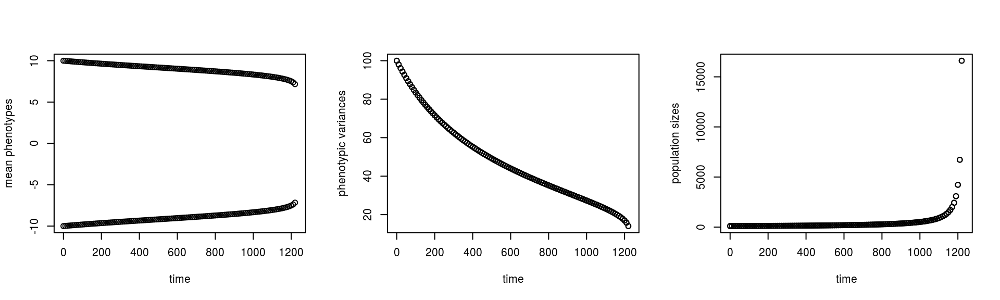
Increasing the Strength of Selection:
- \(\omega_1^2=\omega_2^2=100\)
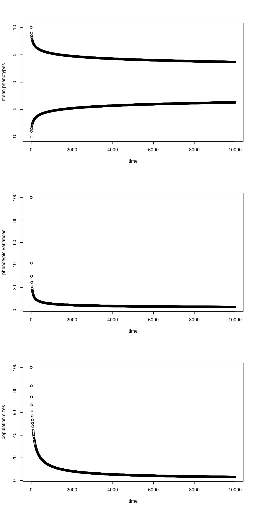
Asymmetric Strengths of Selection:
- \(\omega_1^2=100, \ \omega_2^2=1000\)

Incorporating Density Regulation and Other Stuff
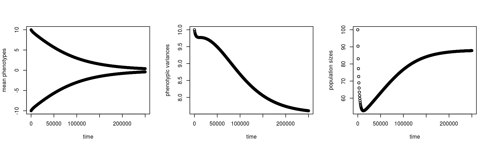
Now all that with Asymmetry
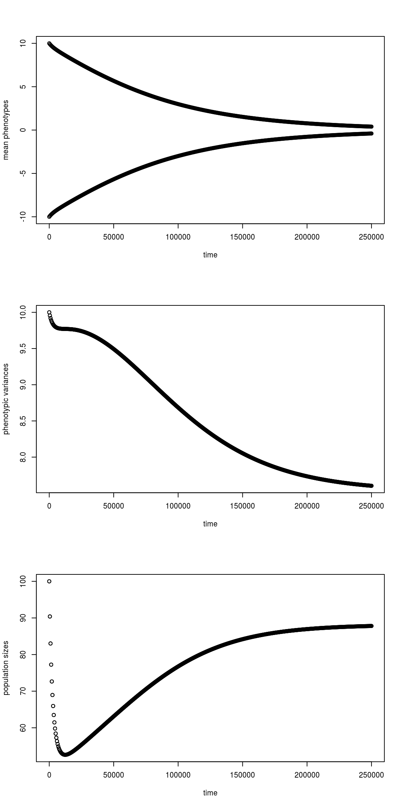
A Non-Gaussian Example
The reason why we only needed to track the mean variance of phenotypes in order to capture the whole distribution was due to our choice of initial phenotypic distribution and selection function. They were both Gaussian for all of the above examples. If either is not Gaussian, then the resulting trajectory of phenotypic distributions will not fall within a Gaussian realm.
Just Mutation

Mutation and Random Mating
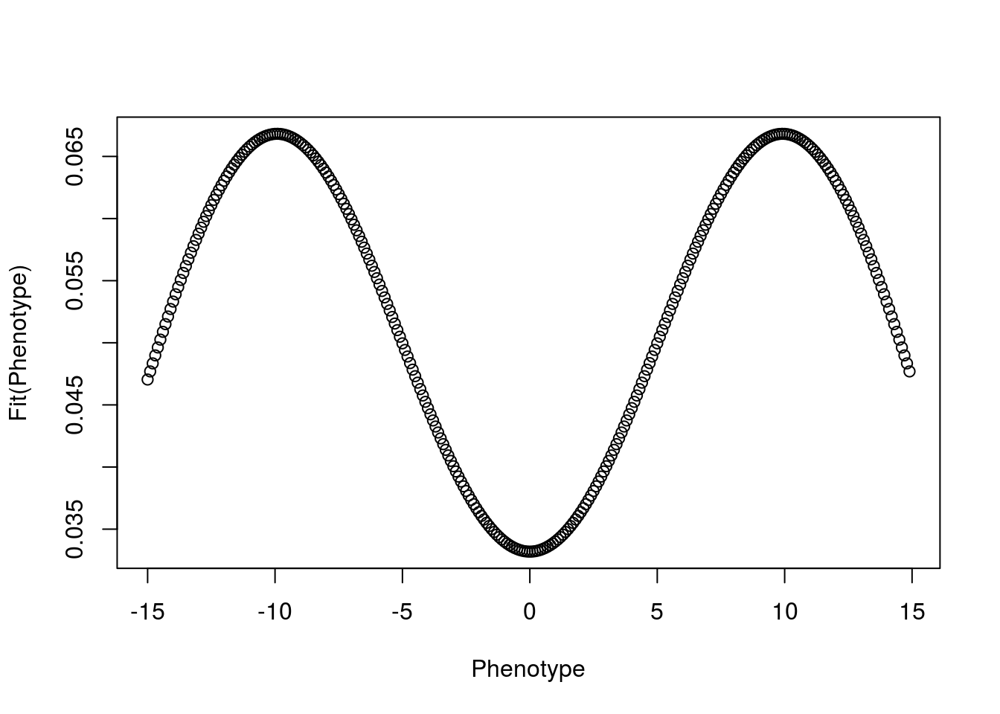
Bimodal Selection
Our selection surface will be the following.
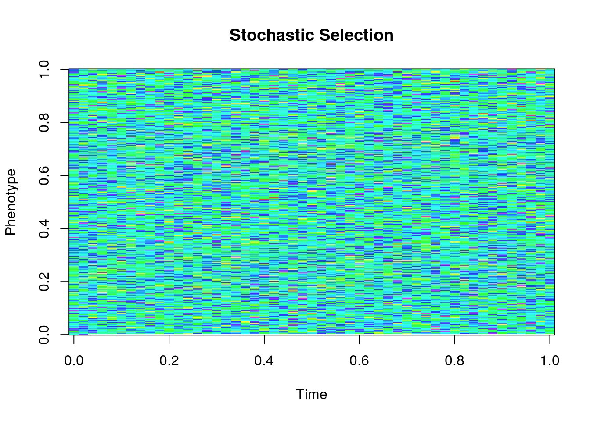
The resulting phenotypic density takes the following trajectory.
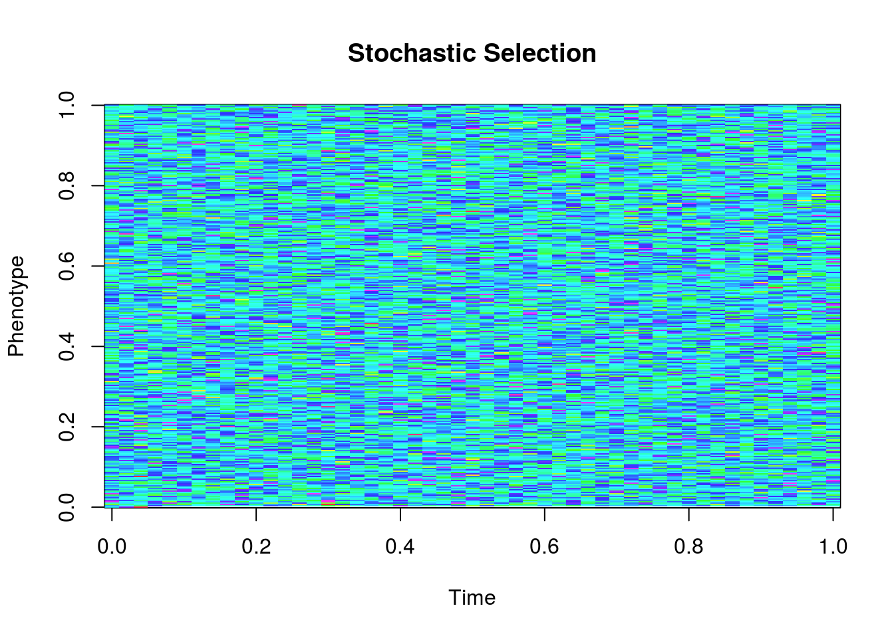
Adding weak random mating:
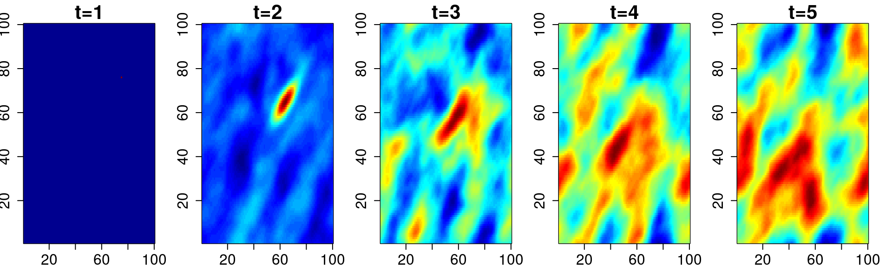
Stochastic Selection
Our selection surface is modelled as space-time white noise. At every time step a random discontinuous surface is generated, each one taking the following general appearance:
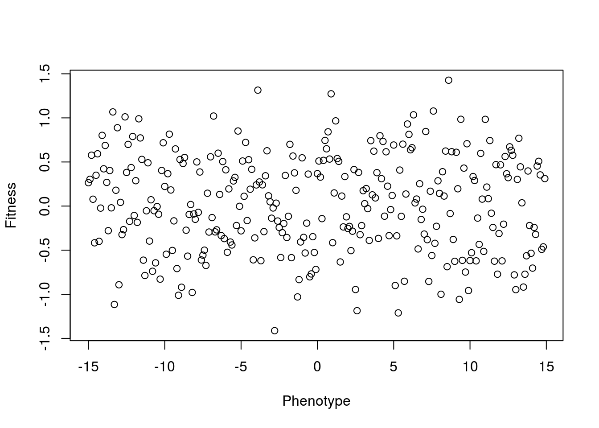
Across time, this random surface can be visualized as a contour plot where hot colors correspond to high fitness and cool colors correspond to low fitness.
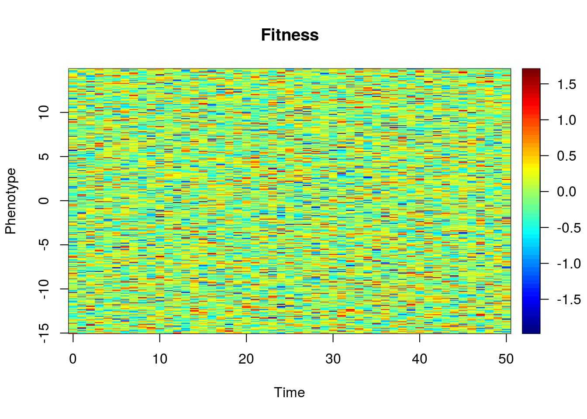
The resulting phenotypic density takes the following trajectory.
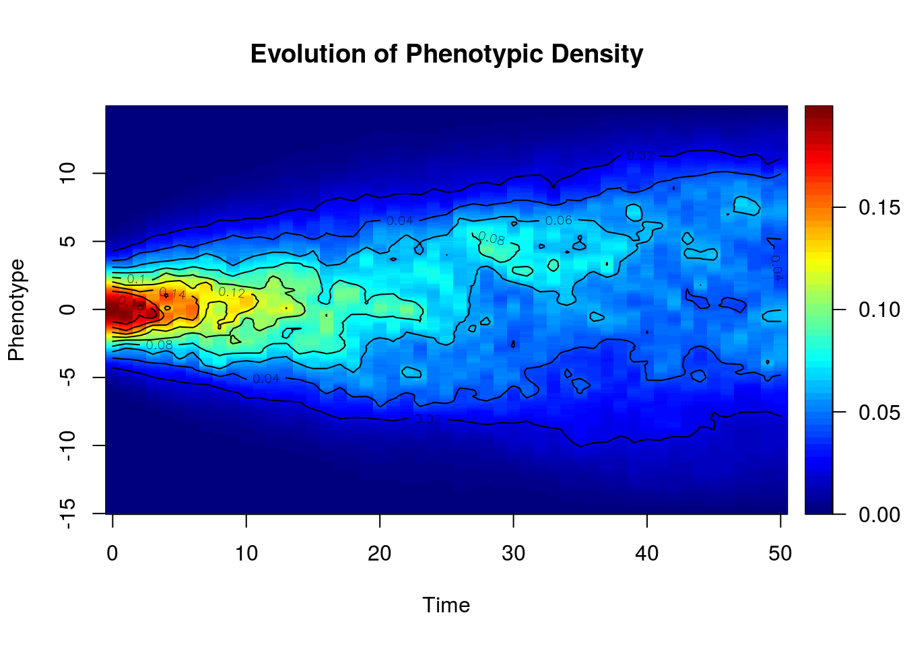
Adding a bit of random mating:
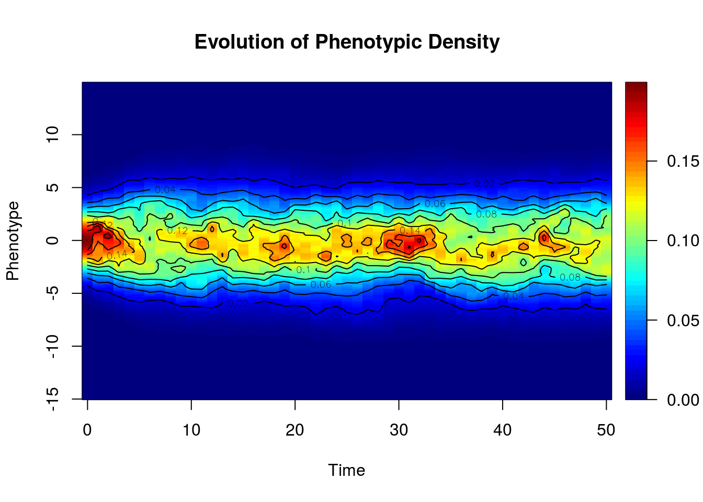
Stochastic Bimodal Selection
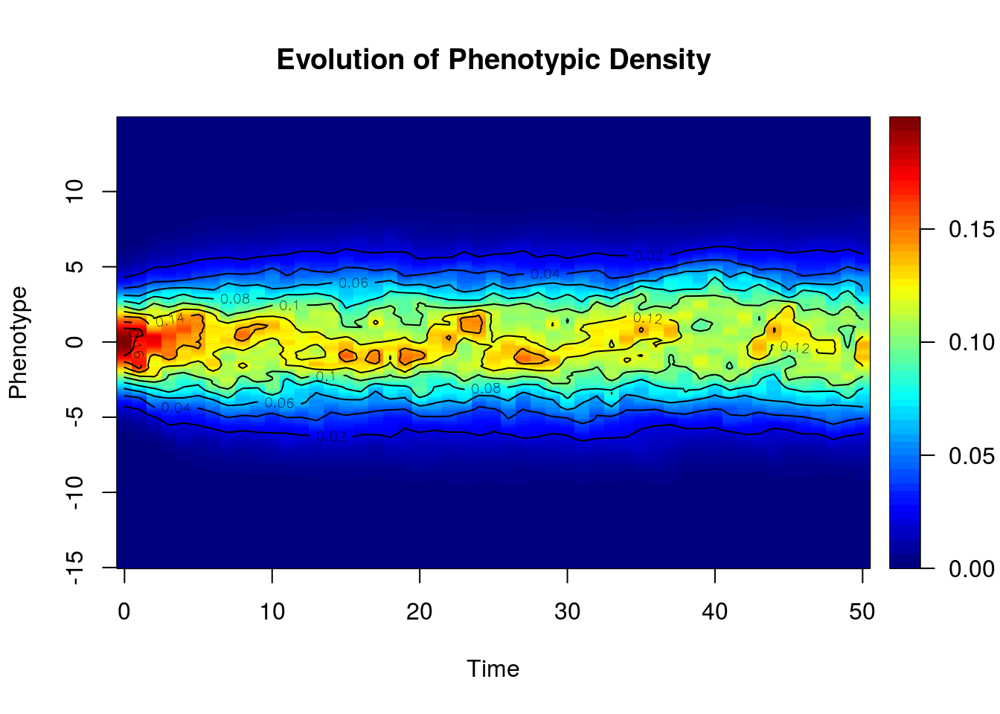
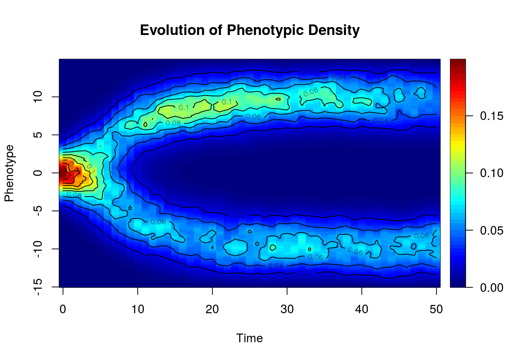
Stochastic Selection That Changes Smoothly Over Time
Our selection surface will be random, but smooth in both space and time. At an instant, it will generally look something like the following.
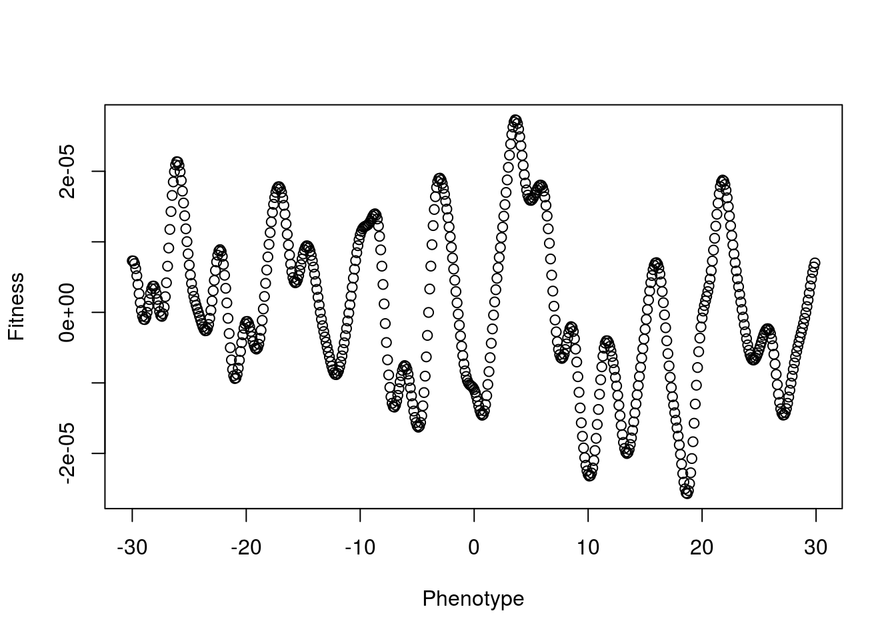
## Warning in contour.default(z = out, x = times, y = c(-30, -29.9, -29.8, :
## contour(): circular/long seglist -- set options("max.contour.segments") >
## 25000?
## Warning in contour.default(z = out, x = times, y = c(-30, -29.9, -29.8, :
## contour(): circular/long seglist -- set options("max.contour.segments") >
## 25000?
## Warning in contour.default(z = out, x = times, y = c(-30, -29.9, -29.8, :
## contour(): circular/long seglist -- set options("max.contour.segments") >
## 25000?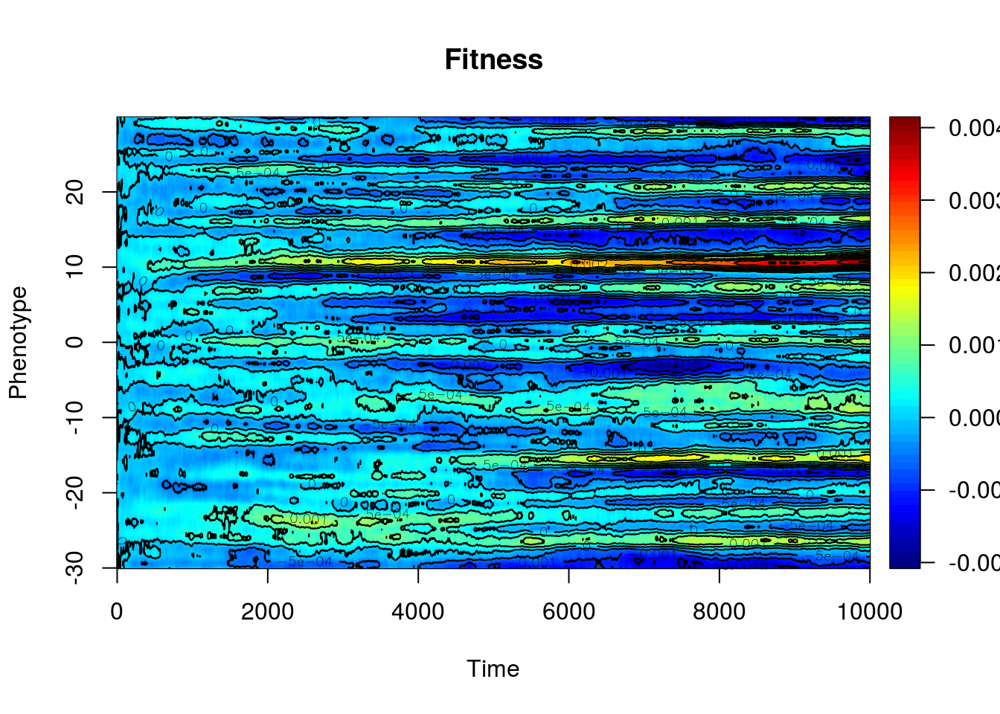
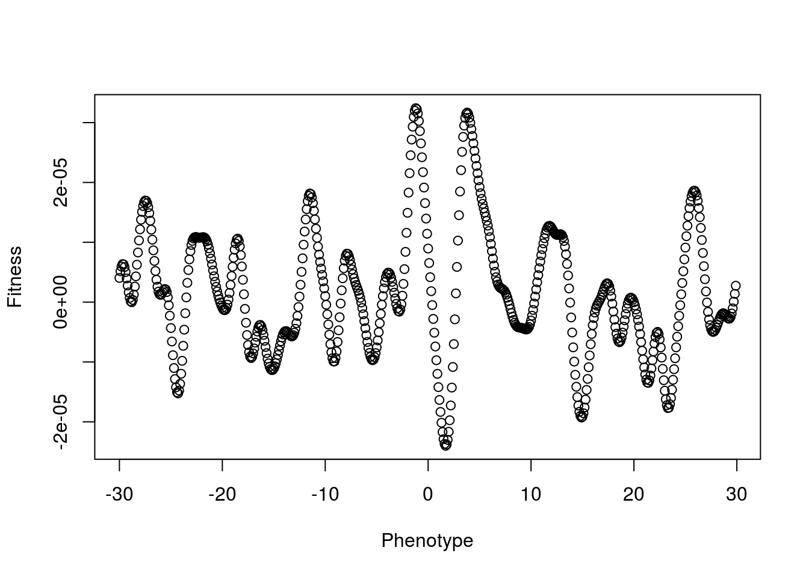
Some Quantitative Genetics
Here I set out to elucidate the mathematics underlying a calculation of mean fitness. This apparently clandestine calculation is the linchpin of a landmark paper in evolutionary theory (Lande 1976). By developing a solid understanding of it will undoubtedly add a handy trick to ones toolkit. I’ll admit right here that I leave out some of the finer technical details, but the motivated reader can fill this gap or find the proof elsewhere.
Gaussian functions play a central role in evolutionary theory. Arguably the most successful equation describing the evolution of a population, the breeder’s equation, requires a normal phenotypic distribution. Typical notation is \(z\) for the phenotype of an individual, \(\bar z\) for the mean phenotype of the population, \(\sigma^2\) for the phenotypic variance and \(\phi\) for the phenotypic density. This provides
\[\phi(z)=\frac{1}{\sqrt{2\pi\sigma^2}}\exp\left(-\frac{(z-\bar z)^2}{2\sigma^2}\right).\]
If there’s selection being imposed on the trait then the fitness \(W(z)\), which denotes the average fitness of an individual with trait \(z\), will not be identically constant. To find the response in mean phenotype to an episode of selection we use the breeder’s equation \(\Delta\bar z=G\frac{\partial\ln\overline W}{\partial\bar z}\) where \(G\) is the additive genetic variance and \(\overline W=\int\phi(z)W(z)dz\) is the mean fitness of the population. However, in order to do so we must first calculate \(\overline W\). In the case of stabilizing selection, this can be done quite nicely by assuming \(W\) is also a Gaussian function of \(z\). That is
\[W(z)=\frac{1}{\sqrt{2\pi\omega^2}}\exp\left(-\frac{(z-\theta)^2}{2\omega^2}\right)\]
with \(\theta\) being the phenotypic optimum and \(\omega^2\) the phenotypic tolerance of selection, which should be thought of as the inverse of the strength of selection. The reason why this calculation is easier with a Gaussian fitness is due to the algebra that Gaussian functions obey. Specifically, the product of two Gaussians is yet another Gaussian. For example
\[W(z)\phi(z)=\frac{C}{\sqrt{2\pi\tilde\sigma^2}}\exp\left(-\frac{(z-\tilde z)^2}{2\tilde\sigma^2}\right),\]
\[\text{where} \ \tilde\sigma^2=\frac{\sigma^2\omega^2}{\sigma^2+\omega^2}, \ \tilde z=\frac{\sigma^2\theta+\omega^2\bar z}{\sigma^2+\omega^2}\]
and \(C\) is some constant. What’s interesting here is to note that the new parameter \(\tilde z\) is a weighted average of \(\theta\) and \(\bar z\), weighted by the tolerance and variance. It should also be noted that \(\tilde\sigma^2<\sigma^2\). One can show that as \(\omega^2\rightarrow\infty\), \(\tilde z\rightarrow\bar z\) and \(\tilde\sigma^2\rightarrow\sigma^2\), in agreement with the concept of \(\omega^2\) being the inverse of the strength of selection. With this result we see that \(\overline W\) is just the integral of the above product over the whole real line. However, this product is just a scaled version of a probability density, scaled by \(C\). Hence, \(\overline W=C\). Then we need to calculate \(C\), and for this I very briefly introduce the binary operation known as convolution.
The concept of a convolution can be readily captured graphically by visualizing the graphs of two functions \(g_1(z)\) and \(g_2(z)\) sliding across each other horizontally. We parameterize this sliding by \(\tau\) which lives on the real number line. We’ll let \(g_2\) remain still and slide \(g_1\). As \(\tau\) runs from each end of the number line visualize the graph of \(g_1\) sliding across \(g_2\). As this sliding occurs, we accumulate the product of these two functions with an integral in such a way that we integrate out \(\tau\). At this point I recommend taking a peek at the wikipedia. In symbols we denote the convolution between \(g_1\) and \(g_2\) by \[g_1 \ast g_2\] and define it as
\[(g_1*g_2)(z)\equiv\int g_1(\tau-z)g_2(z)d\tau.\]
It turns out that \(\overline W\) can be seen as the convolution of two functions. Namely \(\phi_0(\bar z)\equiv\phi(0)\) and \(W_0(\bar z)\equiv W(\bar z)\), the phenotypic density evaluated at zero and the fitness function evaluated at the population mean phenotype respectively. Although \(\phi(0)\) and \(W(\bar z)\) are technically constants, both of the resulting functions are sensitive to the value of \(\bar z\). We could take care by rigorously defining these objects but I’ll leave the mathematical formalities out of this discussion. Instead, observe
\[\phi_0*W_0=\int\phi_0(\bar z-\tau)W_0(\tau)d\tau=\star.\]
If we use \(z\) instead of \(\tau\), this gives
\[\star=\int\phi_0(\bar z-z)W_0(z)dz\]
\[=\int\left[\frac{1}{\sqrt{2\pi\sigma^2}}\exp\left(-\frac{(\bar z-z)^2}{2\sigma^2}\right)\right] \left[\frac{1}{\sqrt{2\pi\omega^2}}\exp\left(-\frac{(z-\theta)^2}{2\omega^2}\right)\right]dz\]
\[=\int\phi(z)W(z)dz=\overline W.\]
Okay, so \(\overline W\) can be written as a convolution, so what? Well it turns out that Gaussian probability densities are closed under convolutions, which is to say that a convolution of two Gaussian densities is yet another Gaussian density. Specifically, if \(g_1(z)\) is a Gaussian probability density with mean \(\mu_1\) and variance \(\sigma_1^2\) and similarly with \(g_2(z)\), then \[(g_1 \ast g_2)(z)=g_3(z)\] is another Gaussian probability density with the mean \(\mu_3=\mu_1+\mu_2\) and variance \(\sigma_3^2=\sigma_1^2+\sigma_2^2.\) Noting that, as probability densities, \(\phi_0\) has mean zero and variance \(\sigma^2\) and \(W_0\) has mean \(\theta\) and variance \(\omega^2\), we now calculate \(\overline W\) as
\[\overline W=\int\phi(z)W(z)dz=(\phi_0*W_0)(\bar z)\]
\[=\frac{1}{\sqrt{2\pi(\sigma^2+\omega^2)}}\exp\left(-\frac{(\bar z-\theta)^2}{2(\sigma^2+\omega^2)}\right).\]
Denoting the additive genetic variance by \(G\), we obtain the response in mean phenotype to \(W\) using the breeder’s equation
\[\Delta\bar z=G\frac{\partial\ln\overline W}{\partial \bar z}\]
\[=G\frac{\partial}{\partial\bar z}\left[\ln\left(\frac{1}{\sqrt{2\pi(\sigma^2+\omega^2)}}\right)-\frac{(\bar z-\theta)^2}{2(\sigma^2+\omega^2)}\right]\]
\[=G\frac{\theta-\bar z}{\sigma^2+\omega^2}.\]
To summarize the properties of products and convolutions of Gaussians:
\[g_1(z)g_2(z)=Cg_3(z), \text{ where } \mu_3=\frac{\sigma_1^2\mu_2+\sigma_2^2\mu_1}{\sigma_1^2+\sigma_2^2}, \ \sigma_3^2=\frac{\sigma_1^2\sigma_2^2}{\sigma_1^2+\sigma_2^2},\]
\[C=\int g_1g_2dz=\frac{1}{\sqrt{2\pi(\sigma_1^2+\sigma_2^2)}}\exp\left(-\frac{(\mu_1-\mu_2)^2}{2(\sigma_1^2+\sigma_2^2)}\right).\]
\[\prod_{i=1}^{n-1}g_i(z)=C'g_n(z), \text{ where } C'=\int\prod_{i=1}^{n-1}g_idz,\]
\[\mu_n=\frac{\sum_{i=1}^{n-1}\mu_j\prod_{j\neq i}\sigma_j^2}{\sum_{i=1}^{n-1}\prod_{j\neq i}\sigma_j^2}, \ \sigma_n^2=\frac{\prod_{i=1}^{n-1}\sigma_i^2}{\sum_{i=1}^{n-1}\prod_{j\neq i}\sigma_j^2}\]
\[(g_1*g_2)(z)=g_3(z), \text{ where } \mu_3=\mu_2+\mu_1, \ \sigma_3^2=\sigma_1^2+\sigma_2^2.\]
Linearization of a Pop Gen Model
Here I cover a way to linearize a simple model of genetic selection. We assume two genotypes, \(A_1\) and \(A_2\), with the frequencies \(p\) and \(q=1-p\) and fitnesses \(W_1\) and \(W_2\) respectively. Then \(\overline W=pW_1+qW_2\) and the change in genotype frequency of \(A_1\) is (ignoring all other processes)
\[\Delta p=pq\frac{\partial\ln\overline W}{\partial p}, \ \text{with} \ \overline W=pW_1+qW_2\]
The resulting dynamics are clearly nonlinear, but are they truly nonlinear or is this due to the fact that the state space is restricted to the open unit interval? If we stretch the unit interval across the whole real line, maybe the dynamics will become linear. To find out we define \(x\equiv\ln\left(\frac{p}{q}\right)\) (\(x\) is called the logit of \(p\)) and calculate \(\Delta x\). For clarity I will write \(D_p\) in place of \(\frac{\partial}{\partial p}\).
\[\Delta x=x'-x=\ln\left(\frac{p'}{q'}\right)-\ln\left(\frac{p}{q}\right)=\ln\left(\frac{p'q}{q'p}\right)\]
\[\implies\exp(\Delta x)=\frac{p+\Delta p}{q-\Delta p}\frac{q}{p}=\frac{1+qD_p\ln\overline W}{1-pD_p\ln\overline W}\]
\[=\frac{\overline W+qD_p\overline W}{\overline W-pD_p\overline W}=\frac{\overline W+(1-p)\left(W_1-W_2\right)}{\overline W-p\left(W_1-W_2\right)}=\frac{W_1}{W_2}\]
\[\implies \Delta x=\ln\left(\frac{W_1}{W_2}\right).\]
Hence, the dynamics stretched onto the whole real line are not only linear, but constant.